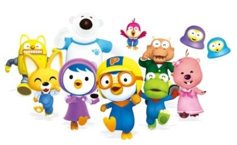
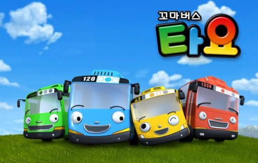

Since its establishment in 2001, iKONIX has continuously produced domestic creative animations such as "Porong Porong Pororo," "Little Bus Tayo," "Chirowa Friends," "Taegeuk Cheonmunja," and "Jetranger." In addition, we have expanded the character industry by publishing, toys, music, performances, theme parks, licenses, and new media based on animation characters, and are leading the globalization of the Korean animation industry by exporting excellent domestic animation to the world.

